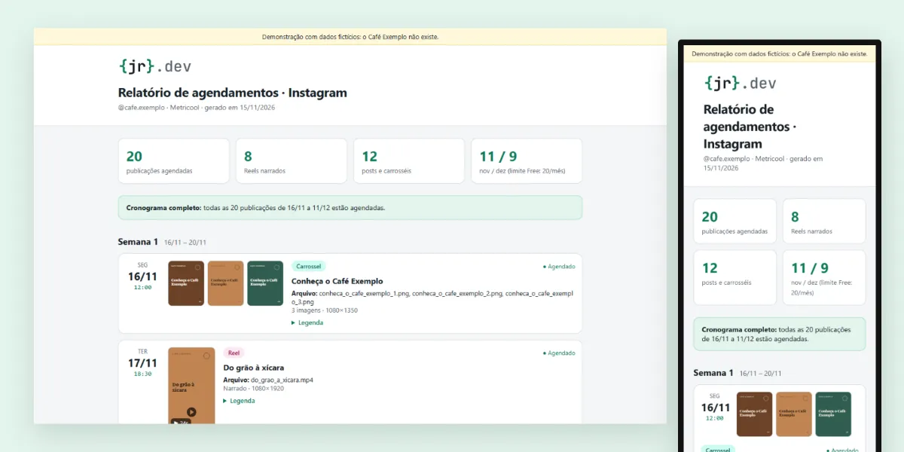

JR Dev · automação e sistemas para escritórios
Da planilha
ao código.
Sou Juan Rocha, administrador na AEI Automação: lidero uma equipe administrativa de 6 pessoas e cuido do RH de duas empresas. Passo o dia entre folha de ponto, benefícios e contas a pagar e a receber, e é dessas rotinas que saem os sistemas que eu programo. Formado em Gestão Empresarial (FATEC) e no último ano de Análise e Desenvolvimento de Sistemas na Estácio.

caso real · relatório de agendamentos · dados fictícios
- antes
- Abrir post por post na ferramenta de agendamento para conferir dia, arquivo e legenda de 20 publicações.
- depois
- Um script em Python lê a API do Metricool e monta uma página única que confere o mês inteiro, até pelo celular.
01 / sobre
Sei onde o tempo se perde no escritório, porque passo o dia lá.
Planilha copiada todo mês, conferência feita à mão, o mesmo lançamento em três sistemas. É nesse tipo de tarefa que eu aplico programação.
-
Conheço a rotina por dentro
RH, departamento pessoal, benefícios, contas a pagar e contabilidade, todo mês, em duas empresas de uma indústria.
-
Começo pela planilha
Quase todo processo já existe numa planilha antes de virar sistema. Parto dela: as colunas viram campos e as fórmulas viram regras.
-
Aprendo em público
Último ano de ADS na Estácio. Os projetos ficam no GitHub, inclusive os de curso, e este site registra a evolução.
02 / serviços
Cinco tipos de trabalho, cada um com um projeto que mostra como fica.
-
Automação de rotinas
Robôs e scripts para o trabalho repetitivo: separar e enviar documentos, preencher sistemas, gerar relatórios.
exemplo Escritório ao vivo
-
Planilhas e painéis
Controles em Excel e Google Planilhas com fórmulas, validações e indicadores que se atualizam sozinhos.
exemplo Painel Inpasa AEI
-
Sites e landing pages
Sites institucionais, páginas de venda e portfólios, do design até a publicação.
exemplo Site Maps
-
Sistemas sob medida
Pequenos sistemas web que funcionam no celular e no computador, do jeito que a rotina pede.
exemplo Muscle Factory
-
IA no escritório
Implantação e treinamento de assistentes de IA na rotina da equipe.
exemplo Auditoria Contábil
como funciona Uma conversa para mapear a rotina, escopo, prazo e preço por escrito antes de começar e, se você quiser, suporte mensal depois da entrega.
03 / projetos
O que já construí enquanto aprendo.
Exercícios de curso
Feitos acompanhando a Alura e o Curso em Vídeo, para treinar HTML, CSS e JavaScript.
04 / ferramentas
O que já uso e o que estou estudando.
- Excel avançado
- Word · Outlook
- Microsoft 365
- HTML & CSS
- JavaScript
- Git & GitHub
- GitHub Pages & Vercel
- Automação com Claude
- Python
- SQL
05 / jornada
Um commit de cada vez.
-
2016
Estágio no Posto JBF
Primeiro contato com a rotina de empresa: estágio unindo administrativo e marketing.
-
2020 — hoje
Administrador · AEI Automação
Lidero a equipe administrativa (6 pessoas) e respondo pelo RH de duas empresas: admissões, folha de ponto, benefícios e rotinas financeiras.
-
último ano
ADS · Estácio
Graduação em Análise e Desenvolvimento de Sistemas, com projetos práticos paralelos.
-
em busca de novos desafios
Próximos passos
Publicar sites que aumentem a visibilidade de negócios e criar sistemas que resolvam rotinas de escritório e melhorem a gestão.
06 / contato